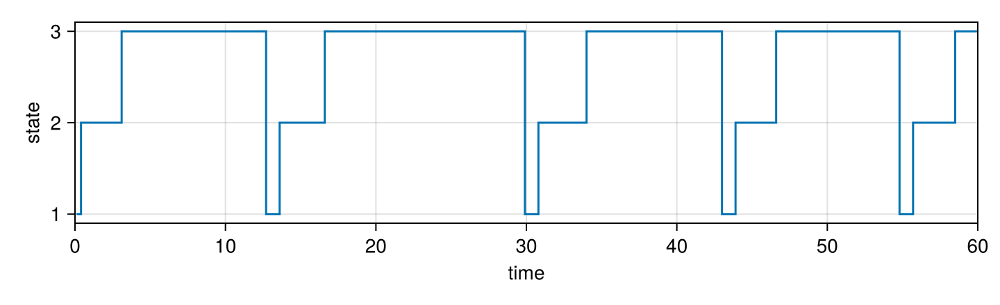
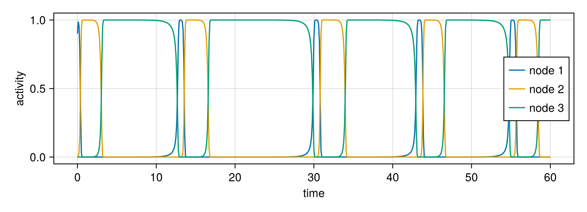
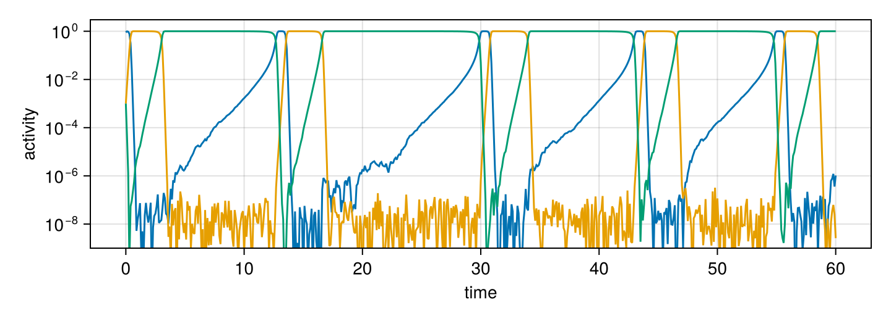
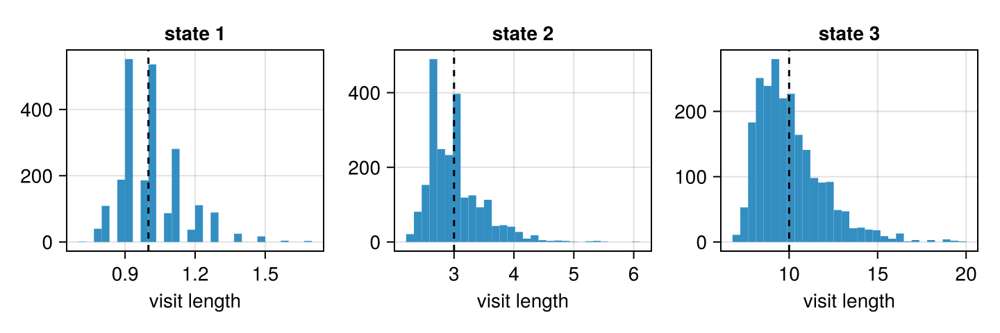

A three-state ring
This tutorial builds a system that visits three states in a fixed order, 1 → 2 → 3 → 1, and stays in them for 1, 3 and 10 time units on average. It goes through every step: the specification, the fit, simulation, measurement, acceptance and classification.
using GenerateDynamicalNetworksThe specification
A TransitionSpec takes the transition matrix, the mean dwells and the noise level. ring gives the matrix of a cycle.
spec = TransitionSpec(ring(3), [1.0, 3.0, 10.0]; noise=1e-3)TransitionSpec(3 states, 3 edges, noise 0.001, sample 0.1)spec.P3×3 Matrix{Float64}:
0.0 1.0 0.0
0.0 0.0 1.0
1.0 0.0 0.0The frame interval sample wasn't given, so it is a tenth of the shortest dwell:
spec.sample0.1The fit
A backend builds the system. Here it is Horchler, a Lotka–Volterra network with one node per state (Horchler describes it).
model = fit(spec, Horchler(); verbose=true); Horchler: the correction passes pass the held-out check; no search
The design formula and four correction passes were enough, so the fit didn't need its search.
The model holds the parameters of the system. For this backend they are a growth rate per node and a coupling matrix:
model.α3-element Vector{Float64}:
17.24008483160551
17.24008483160551
17.24008483160551model.ρ3×3 Matrix{Float64}:
17.2401 34.4802 16.6405
8.62004 17.2401 34.4802
34.4802 14.7282 17.2401Simulating
simulate makes independent runs, one per seed. Each run is the list of states entered and the times they were entered.
runs = simulate(model, spec; T=2000, seeds=1:16)
first_run = runs[1]
first_run.state[1:7]7-element Vector{Int64}:
1
2
3
1
2
3
1round.(first_run.t[1:7]; digits=1)7-element Vector{Float64}:
0.1
0.4
3.1
12.7
13.6
16.6
29.9The first minute of that run:
using CairoMakie
CairoMakie.activate!(; type="png")
fig = Figure(; size=(720, 220))
ax = Axis(fig[1, 1]; xlabel="time", ylabel="state", yticks=1:3)
stairs!(ax, first_run.t, first_run.state; step=:post)
xlims!(ax, 0, 60)
Looking at the trajectory
simulate keeps only the visits. To see the variables themselves, solve the model's equation directly. Every model supplies its drift, noise, parameters and starting point (Internals and the backend interface); these aren't exported, so they are called with the module name.
using SciMLBase, StochasticDiffEqLowOrder
const GDN = GenerateDynamicalNetworks
every, dt = GDN.frame_steps(model, spec.sample, 0.01)
problem = SDEProblem(GDN.drift_function(model), GDN.noise_function(model), GDN.initial_state(model), (0.0, 60.0),
GDN.parameters(model); seed=UInt64(1))
sol = solve(problem, EM(); dt, saveat=spec.sample);This uses the simulator's own step and the seed of the first run, so it is the same run as first_run above.
The model is in the u form, where the activity of node $i$ is $u_i^2$. One node is active at a time, and the next one takes over quickly after a long wait.
fig = Figure(; size=(720, 260))
ax = Axis(fig[1, 1]; xlabel="time", ylabel="activity")
for i in 1:3
lines!(ax, sol.t, [u[i]^2 for u in sol.u]; label="node $i")
end
axislegend(ax; position=:rc)
On a log scale the waiting is visible: while one node is active, the next grows exponentially from the noise level until it takes over. That growth is what sets the dwell. The colours are as above.
fig = Figure(; size=(720, 260))
ax = Axis(fig[1, 1]; xlabel="time", ylabel="activity", yscale=log10)
for i in 1:3
lines!(ax, sol.t, [max(u[i]^2, 1e-12) for u in sol.u]; label="node $i")
end
ylims!(ax, 1e-9, 3)
Measuring
measure pools the runs. The mean dwells are close to the targets 1, 3 and 10:
m = measure(runs, nstates(spec))
m.dwell3-element Vector{Float64}:
1.0052956752485473
3.004385965060385
10.053771504683901m.sem3-element Vector{Float64}:
0.002865945779272145
0.00951827856110362
0.039134647646891105m.samples has every visit length. The dwells of a system like this are far from exponential: each visit is a wait of similar length.
fig = Figure(; size=(720, 240))
for i in 1:3
ax = Axis(fig[1, i]; title="state $i", xlabel="visit length")
hist!(ax, m.samples[i]; bins=30)
vlines!(ax, spec.τ[i]; color=:black, linestyle=:dash)
end┌ Warning: Assignment to `ax` in soft scope is ambiguous because a global variable by the same name exists: `ax` will be treated as a new local. Disambiguate by using `local ax` to suppress this warning or `global ax` to assign to the existing global variable.
└ @ ~/Programming/GenerateDynamicalNetworks.jl/docs/src/tutorials/ring.md:3

The dashed lines are the targets.
Acceptance
The 16 runs above are only a look. validate makes one acceptance check on 64 held-out seeds:
check = validate(model, spec)Check(dwell 1.004 2.992 10.017, err% +0.4 -0.3 +0.2, rms 0.28%, off 0.00%, dwell ok, branches ok: PASS)accept makes the whole protocol: two sets of seeds, and the first set again at half the step (The acceptance rule).
acceptance = accept(model, spec)Acceptance: PASS
set 1: Check(dwell 1.004 2.992 10.017, err% +0.4 -0.3 +0.2, rms 0.28%, off 0.00%, dwell ok, branches ok: PASS)
set 2: Check(dwell 1.005 2.990 10.031, err% +0.5 -0.3 +0.3, rms 0.39%, off 0.00%, dwell ok, branches ok: PASS)
half step: Check(dwell 1.003 2.995 10.023, err% +0.3 -0.2 +0.2, rms 0.23%, off 0.00%, dwell ok, branches ok: PASS)acceptance.passtrueA ring has no branches, so the branch rule has nothing to test here. A branching graph is about that rule.
The dynamical class
classify switches the noise off and looks at where the system goes.
classify(model, spec)(class = :heteroclinic, outcomes = "saddle saddle saddle saddle saddle")From all five starting points the noise-free system comes to rest at a saddle, so the model is heteroclinic: it needs noise to leave each state (Dynamical classes).